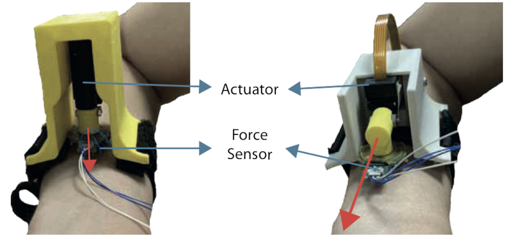

We introduce CoinFT, a capacitive 6-axis force/torque (F/T) sensor that is compact, light, low-cost, and robust with an average mean-squared error of 0.11N for force and 0.84mNm for moment when the input ranges from 0∼10N and 0∼4N in normal and shear directions, respectively. CoinFT is a stack of two rigid PCBs with comb-shaped electrodes connected by an array of silicone rubber pillars. The microcontroller interrogates the electrodes in different subsets in order to enhance sensitivity for measuring 6-axis F/T. The combination of desirable features of CoinFT enables various contact-rich robot interactions at a scale, across different embodiment domains including drones, robot end-effectors, and wearable haptic devices. We demonstrate the utility of CoinFT on drones by performing an attitude-based force control to perform tasks that require careful contact force modulation.
Coinft is robust in the compressive direction
CoinFTs on each finger of a modified UMI device is used to collect multimodal data and perform compliance control on both external contact forces and internal grasp forces during manipulation.
Project WebsiteCoinFTs are mounted on the fingers of a dexterous hand and are used to teach robots forceful dexterous manipulation through kinesthetic teaching.
Project WebsiteA attitude-based force PID control enables aerial vehicles to regulate contact force using CoinFT, allowing drones to perform contact-based tasks reliably.
A 4-DoF fingertip haptic device can provide force-controlled haptic feedback using CoinFT.
Paper
CoinFT is used to compare intensity perception of normal and shear forces through a haptic bracelet.
PaperA 3-DoF forearm-mounted haptic device can provide force-controlled haptic feedback using CoinFT.
PaperCoinFT continues to be researched and developed by Hojung Choi, Seongheon Hong, and Mark Cutkosky at the Biomimetics and Dexterous Manipulation Laboratory (BDML) at Stanford University.
For questions and feedback, please email Hojung (ilovehjb0520@gmail.com) and Seongheon (wbfprp@stanford.edu).
@misc{choi2025coinftcoinsizedcapacitive6axis,
title={CoinFT: A Coin-Sized, Capacitive 6-Axis Force Torque Sensor for Robotic Applications},
author={Hojung Choi and Jun En Low and Tae Myung Huh and Gabriela A. Uribe and Seongheon Hong and Kenneth A. W. Hoffman and Julia Di and Tony G. Chen and Andrew A. Stanley and Mark R. Cutkosky},
year={2025},
eprint={2503.19225},
archivePrefix={arXiv},
url={https://arxiv.org/abs/2503.19225}}